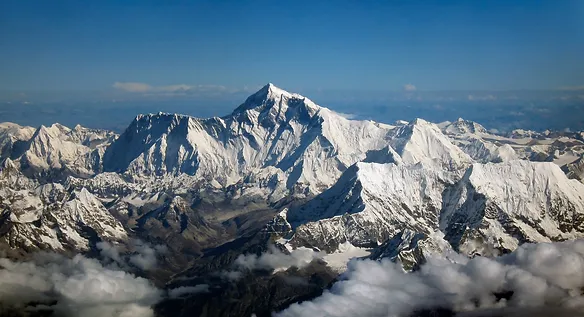

Blood lactate is associated with fatigue during maximal exercise. This post writes about the phenomenon of reduced blood lactate concentration found with increasing altitude.

Energy production during physical work comes from three energy systems: 1) adenosine triphosphate creatine phosphate (ATP-CP), 2) anaerobic glycolysis, and 3) aerobic system. All three systems work concurrently to produce energy, but dominance of any one system is dependent on exercise intensity and duration. Supply of energy for muscle contraction during endurance exercise primarily comes from either aerobic or anaerobic systems. The key difference between the two systems is that aerobic system requires oxygen in the production of energy but anaerobic system does not.
It has been traditionally believed that endurance exercise performance is limited by one’s maximal aerobic capacity (VO2max). Exercising beyond this capacity will shift the energy supply to become more reliant on the anaerobic energy system instead. Consequently, low oxygenation in muscles leads to accumulation of blood lactate, or more commonly known as lactic acid. In a classic study, high levels of blood lactate was found in frog muscles that were stimulated to contract to failure. This has led to the hypothesis that blood lactate is associated with physical fatigue.
Exercising in Altitude
If you have been in the mountains, you will notice that breathing gets more difficult with advancing altitude levels. Naturally, exercise performance also becomes more exhaustive under such conditions. Since blood lactate is associated with anaerobic energy pathways, higher lactate concentrations are expected at high altitude, whereby oxygen levels are lower. Indeed, this is so among individuals who first experienced altitude. However, peak blood lactate concentration was found to decrease with increasing altitude among individuals who were acclimatised to altitude.
The phenomenon of lower peak blood lactate concentration under greater hypoxic conditions at high altitude levels is puzzling to physiologists. This phenomenon is termed the “lactate paradox”. The paradox was confirmed in Operation Everest II, a study that examined acclimatisation effects of participants at altitude levels equivalent to the summit of Mount Everest, approximately 8848 metres high. It was discovered that the blood lactate concentrations among acclimatised subjects during maximal exercise at high altitude level were not significantly different as compared to during rest at sea levels.
To date, the lactate paradox remains poorly understood. Nevertheless, this phenomenon suggests that blood lactate is not necessarily associated with physical fatigue. Hence, the theoretical belief that endurance exercise performance is limited by accumulation of blood lactate in skeletal muscles is unlikely correct.